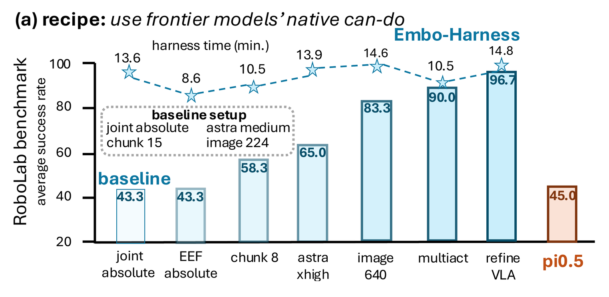
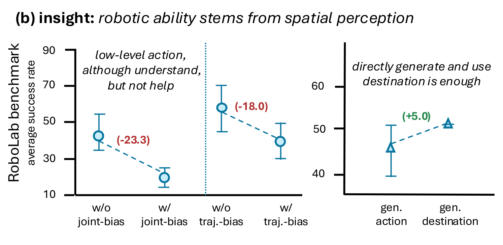
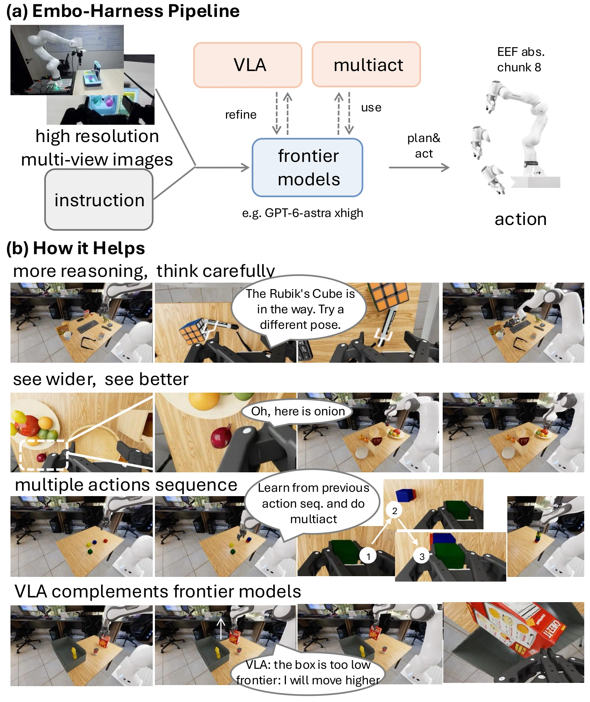

How?
Leverage frontier models’ native capabilities, such as visual perception and tool use, rather than imposing handcrafted priors.

But two fundamental questions remain:
Two Key Takeaways
Leverage frontier models’ native capabilities, such as visual perception and tool use, rather than imposing handcrafted priors.

Their remarkable performance is primarily driven by a leap in multimodal spatial perception, rather than low-level action generation.

We systematically explore action execution, planning, prompting, and tool use to unlock frontier models’ native capabilities.
| Design choice | SR (%) ↑ | Score ↑ | Time (min.) ↓ |
|---|---|---|---|
| Action space | |||
| Joint absolute | 43.3 | 52.2 | 13.6 |
| Joint delta | 48.3 | 53.8 | 12.1 |
| EEF absolute | 43.3 | 51.9 | 8.6 |
| EEF delta | 45.0 | 51.4 | 9.0 |
| Action chunking | |||
| Chunk 4 | 40.0 | 50.8 | 9.0 |
| Chunk 8 | 58.0 | 68.3 | 10.5 |
| Chunk 15 | 43.3 | 51.9 | 9.0 |
| Chunk 30 | 21.7 | 28.1 | 5.0 |
| Action execution | |||
| Synchronous execution | 58.0 | 68.3 | 10.5 |
| Asynchronous execution | 51.7 | 53.6 | 12.5 |
| Design choice | SR (%) ↑ | Score ↑ | Time (min.) ↓ |
|---|---|---|---|
| Model type and effort | |||
| GPT-6-astra-medium | 58.0 | 68.3 | 10.5 |
| GPT-6-astra-high | 51.7 | 55.6 | 14.5 |
| GPT-6-astra-xhigh | 65.0 | 69.2 | 13.9 |
| GPT-6.1-sol-medium | 40.0 | 44.4 | 12.8 |
| GPT-6.1-terra-medium | 38.3 | 39.7 | 12.1 |
| Planning | |||
| Implicit planning | 65.0 | 69.2 | 13.9 |
| Explicit planning | 61.7 | 65.0 | 16.5 |
| Context | |||
| Full context | 65.0 | 69.2 | 13.9 |
| Cut visual history context | 8× token cost (regenerating KV-cache) | ||
| Design choice | SR (%) ↑ | Score ↑ | Time (min.) ↓ |
|---|---|---|---|
| Prompt | |||
| System prompt only | 65.0 | 69.2 | 13.9 |
| With notice reminder | 60.0 | 60.3 | 15.3 |
| Views | |||
| Two views | 65.0 | 69.2 | 13.9 |
| Single view | 30.0 | 36.4 | 13.1 |
| Visual resolution | |||
| 224 × 126 | 65.0 | 69.2 | 13.9 |
| 320 × 180 | 71.7 | 73.6 | 13.4 |
| 640 × 360 | 83.3 | 86.7 | 14.6 |
| Design choice | SR (%) ↑ | Score ↑ | Time (min.) ↓ |
|---|---|---|---|
| Short action sequence as a tool | |||
| One action at a time | 83.3 | 86.7 | 14.6 |
| With action sequence | 90.0 | 90.0 | 10.5 |
| Policy models as a tool | |||
| Frontier model only | 90.0 | 90.0 | 10.5 |
| Select policy models | 58.3 | 62.2 | 4.4 |
| Refine policy models | 96.7 | 96.7 | 14.8 |

Success rate on RoboLab-120
Over the strongest reported baseline
Zero-shot real-world trials
| Policy | Type | SR (%) ↑ | Score ↑ |
|---|---|---|---|
| Agentic methods | |||
| Embo-Harness | Agentic | 83.3 | 89.2 |
| SenseNova-RoboRSI | Agentic | 57.1 | 69.9 |
| VoLo | Agentic | 28.2 | 44.1 |
| Policy models | |||
| FLUX 3 Action | WAM | 42.9 | – |
| Atomic-WAM | VLM+WAM | 39.6 | 55.5 |
| Cosmos3-Nano-Policy | WAM | 36.8 | 51.9 |
| π0.5 | VLA | 28.0 | 43.4 |
| DreamZero | WAM | 25.7 | 39.8 |
| Cosmos3-Edge-Policy | WAM | 22.9 | – |
| π0-FAST | VLA | 15.5 | 26.9 |
| GR00T N1.6 | VLA | 7.2 | 17.1 |
| π0 | VLA | 5.0 | 12.2 |
| paligemma-binning | VLA | 3.4 | 9.9 |
Four manipulation tasks, without task-specific training, memory, or hints.
| Policy | Block stacking | Fruit packing | Dish washing | Flower arranging |
|---|---|---|---|---|
| Baseline | 4/5 | 3/5 | 0/5 | 0/5 |
| Embo-Harness | 5/5 | 5/5 | 2/5 | 3/5 |
Controlled interventions point to spatial perception as the primary driver of manipulation performance.
Frontier models can generate joint and trajectory actions. Explicitly requiring them to do so reduces manipulation success.
| Policy | SR (%) ↑ | Score ↑ |
|---|---|---|
| Joint bias | ||
| Joint absolute with IK/FK | 43.3 | 52.2 |
| Direct joint absolute | 20.0 −23.3 | 27.2 −25.0 |
| Joint delta with IK/FK | 48.3 | 53.8 |
| Direct joint delta | 16.7 −31.6 | 26.6 −27.2 |
| Action chunk bias | ||
| Chunk 8 | 58.0 | 68.3 |
| Direct chunk 8 | 40.0 −18.0 | 43.6 −24.7 |
| Chunk 15 | 43.3 | 51.9 |
| Direct chunk 15 | 33.3 −10.0 | 36.7 −15.2 |
Predicting the final end-effector destination outperforms short-range action generation.
| Policy | SR (%) ↑ | Score ↑ |
|---|---|---|
| EEF absolute | 43.3 | 51.9 |
| EEF delta | 45.0 | 51.4 |
| EEF destination | 50.0 +5.0 | 55.0 +3.1 |
Stronger reasoning and richer visual inputs improve position estimation, broadly aligning with manipulation performance.
Position estimation errors are comparable to gripper-to-target errors in failed grasps.
| Setting | Average (cm) ↓ | Median (cm) ↓ | ≤ 5 cm (%) ↑ |
|---|---|---|---|
| Model effort | |||
| Medium | 14.10 | 11.24 | 7.4 |
| High | 10.67 | 9.21 | 10.0 |
| Xhigh | 9.07 | 7.04 | 28.1 |
| Visual resolution | |||
| 224 × 126 | 14.14 | 11.39 | 10.0 |
| 320 × 180 | 11.57 | 9.58 | 12.5 |
| 640 × 360 | 9.07 | 7.04 | 28.1 |
| Moving prior | |||
| Normal | 9.07 | 7.04 | 28.1 |
| Moving closer | 7.15 | 5.48 | 48.4 |
| Execution reference · Failed grasps | |||
| Grasp position error | 11.04 | 8.39 | 17.2 |
Tables 4–6 · RoboLab, 20 tasks × 3 runs